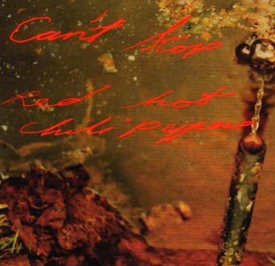

Can't stop
Can't stop, addicted to the shindig
Chop Top, he says I'm gonna win big
Choose not a life of imitation
Distant cousin to the reservation
Defunkt, the pistol that you pay for
This punk, the feelin' that you stay for
In time, I want to be your best friend
East Side love is living on the West End
Knocked out, but boy, you better come to
Don't die, you know, the truth is some do
Go write your message on the pavement
Burn so bright, I wonder what the wave meant
White heat is screamin' in the jungle
Complete the motion if you stumble
Go ask the dust for any answers
Come back strong with fifty belly dancers
The world I love, the tears I drop
To be part of the wave, can't stop
Ever wonder if it's all for you?
The world I love, the trains I hop
To be part of the wave, can't stop
Come and tell me when it's time to
Sweetheart is bleeding in the snow cone
So smart, she's leading me to ozone
Music, the great communicator
Use two sticks to make it in the nature
I'll get you into penetration
The gender of a generation
The birth of every other nation
Worth your weight, the gold of meditation
This chapter's gonna be a close one
Smoke rings, I know you're gonna blow one
All on a spaceship, persevering
Use my hands for everything but steering
Can't stop the spirits when they need you
Mop tops are happy when they feed you
J. Butterfly is in the treetop
Birds that blow the meaning into bebop
The world I love, the tears I drop
To be part of the wave, can't stop
Ever wonder if it's all for you?
The world I love, the trains I hop
To be part of the wave, can't stop
Come and tell me when it's time to
Wait a minute, I'm passin' out, win or lose
Just like you
Far more shocking than anything I ever knew
How about you?
Ten more reasons why I need somebody new
Just like you
Far more shocking than anything I ever knew
Right on cue
Can't stop, addicted to the shindig
Chop Top, he says I'm gonna win big
Choose not a life of imitation
Distant cousin to the reservation
Defunkt, the pistol that you pay for
This punk, the feelin' that you stay for
In time, I want to be your best friend
East Side love is living on the West End
Knocked out, but boy, you better come to
Don't die, you know, the truth is some do
Go write your message on the pavement
Burn so bright, I wonder what the wave meant
Kick-start the golden generator
Sweet talk but don't intimidate her
Can't stop the gods from engineering
Feel no need for any interfering
Your image in the dictionary
This life is more than ordinary
Can I get two, maybe even three of these?
Comin' from space to teach you of the Pleiades
Can't stop the spirits when they need you
This life is more than just a read-through